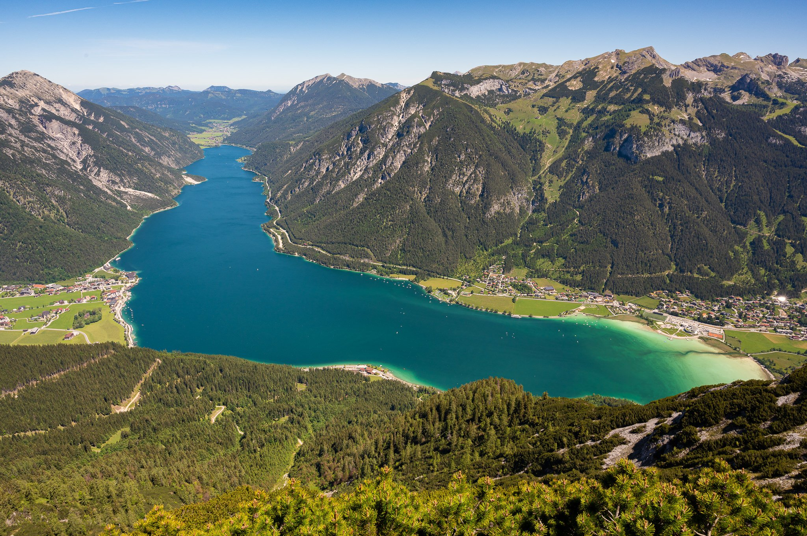

Achensee
Der Achensee, als größter See Tirols, erstreckt sich über 6,8km²
und erreicht eine Tiefe von bis zu 133 Metern. Umrahmt von den
Brandenberger Alpen und dem Karwendelgebirge, bietet er eine beeindruckende Kulisse
für Erholungssuchende und Wassersportler.
Öffentliche Badeplätze und Strandbäder am Achensee
-
Badestrand Seespitz in Maurach: Am
südlichsten Ende des Achensees gelegen, bietet dieser
Strand eine große Liegewiese mit direktem Seezugang
und sanitären Anlagen. Hunde sind erlaubt.
-
Strandbad Pertisau: Direkt am Seeufer
gelegen, verfügt dieses Strandbad über eine 5.000m²
große Liegewiese mit Kinderspielplatz, Kinderbecken,
Sonnensegel, Sprungturm, Volleyballplatz, Kinderrutsche,
Strandcafé und sanitären Anlagen. Hunde an der Leine sind erlaubt.
-
SEE-Bad im Atoll Achensee in Maurach: Dieses
kostenpflichtige Strandbad bietet eine große Liegewiese, einen
Kinder-Strand mit Flachwasser-Zugang, Badestege, eine BEACH-Bar,
eine SNACK-Bar, einen Spiel- und Motorik-Park sowie einen SUP-Verleih.
